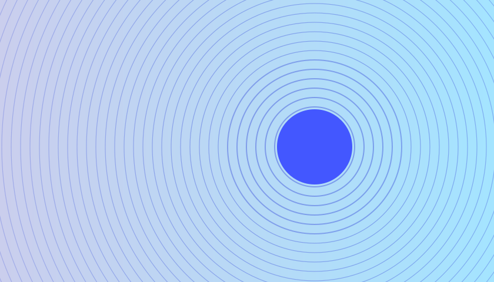

گفتوگوی فردی
یک مسئلهٔ مشخص را در فضایی آرام مرور کنید.
انتخاب ↗گفتوگو برای مدیران و تیمهایی که میخواهند قدم بعدی را با تمرکز بردارند.
تنظیم گفتوگوی اول
گفتوگو را با راهحل آماده شروع نمیکنیم. ابتدا زمان میگذاریم تا مسئله را به زبان خودتان توضیح دهید.
 انتخاب این طرح
انتخاب این طرح